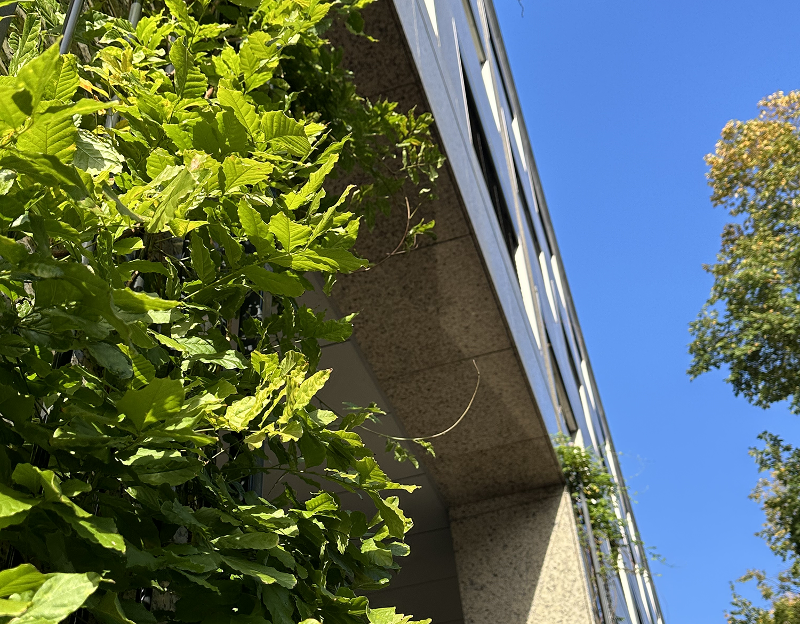

Toekomst
De pilaren op de gemeentelijke gebouwen op de Weesperstraat 113 en 430 zijn sinds oktober 2020 vergroend. Er is bij elke pilaar een stalen raster geplaatst zodat er klimplanten op kunnen groeien.
BIZ Knowledge Mile
BIZ Knowledge Mile is een organisatie die sinds 2017 voor andere organisaties de mogelijkheid biedt om in een afgebakend gebied samen te investeren in hun omgeving en onderneming. Het afgebakend gebied valt tussen het Amstelplein en het stadhuis van Amsterdam. Ze willen er samen voor zorgen dat het gebied duurzaam, groen en veilig wordt.